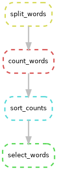

Advanced Snakemake
UM Bioinformatics Core
By the end of this module, we will:
- Show other ways to visualize the Snakemake workflow.
- Use an all rule and wildcards to easily extend a workflow to new inputs.
- Introduce configuration files
- Run Snakemake on the HPC worker nodes instead of the login nodes
Visualizing the DAG / rulegraph
In addition to doing a dry run, snakemake can generate a
diagram of the rules to execute. Snakemake thinks of the rules as a Directed Acyclic Graph (DAG). You can see this with
the --dag flag and the dot program (part of Graphviz, an open
source graph visualizer).
snakemake --dag | dot -Tpng > dag.png
As you can see above, by default dot displays the graphs
vertically with inputs at the top and outputs at the bottom. Our
Snakefile is arranged from output to input, so you can invert the
diagram like so:
snakemake --dag | dot -Grankdir="BT" -Tpng > dag_inverted.png
All target / Wildcards / Visualizaing the rulegraph
To emphasize the endpoint of the workflow and also clarify the default target, it’s common to place a “rule all” at the top of the file. (This also allows you to reorder rules within the file arbitrarily.) It is unusual in that it only has an input directive.
rule all:
input: "results/little_women_part_1.select_words.txt"Snakemake wildcards make it easy to to extend the workflow to new inputs. (And they typically reduce repetition of file names.) Here is an excerpt of the Snakefile showing the original select_words rule and the same rule with wildcards.
rule all:
input: "results/little_women_part_1.select_words.txt"
# original rule
# rule select_words:
# input: "result/little_women_part_1.sort_counts.txt"
# output: "results/little_women_part_1.select_words.txt"
# shell: "egrep '^(Jo|Amy|Meg|Beth)\s' {input} > {output}"
# now with wildcards
rule select_words:
input: "result/{base_name}.sort_counts.txt"
output: "results/{base_name}.select_words.txt"
shell: "egrep '^(Jo|Amy|Meg|Beth)\s' {input} > {output}"
How does this work?
- The all rule needs an input named “results/little_women_part_1.select_words.txt”
- The select_words rule can produce “results/{base_name}.select_words.txt” which would match the all input if the wildcard {base_name}=“little_women_part_1”
- In select_word input, the rule substitutes the {base_name} value for it’s wildcard, making “result/little_women_part_1.sort_counts.txt”
- So the the value of the wildcard is determined by the file name in the all rule and that value propagates from output to input.
What happens if we run snakemake?
snakemake -c1 --dry-runBuilding DAG of jobs... Nothing to be done (all requested files are present and up to date).
And that actually makes sense: even though we used wildcards, the rules ended up with identical input and output values.
We can extend wildcards across remaining rules as below. Note that we need to keep the literal value in the all rule so the other rules can derive the value of the wildcard.
rule all:
input: "results/little_women_part_1.select_words.txt"
rule select_words:
input: "results/{base_name}.sort_counts.txt"
output: "results/{base_name}.select_words.txt"
shell: "egrep '^(Jo|Amy|Meg|Beth)\s' {input} > {output}"
rule sort_counts:
input: "results/{base_name}.count_words.txt"
output: "results/{base_name}.sort_counts.txt"
shell: """
sort -k1,1nr {input} \
| awk 'BEGIN {{print "word\tcount"}} {{ print $2 "\t" $1}}' \
> {output}
"""
rule count_words:
input: "results/{base_name}.split_words.txt"
output: "results/{base_name}.count_words.txt"
shell: "sort {input} | uniq -c > {output}"
rule split_words:
input: "inputs/{base_name}.txt"
output: "results/{base_name}.split_words.txt"
shell: "cat {input} | tr -cs '[:alpha:]' '\n' > {output}"Now that the Snakefile is using wildcards, it is trivial to extend it to new inputs. We adjust the all rule adding a second value, separated by a comma:
rule all:
input: "results/little_women_part_1.select_words.txt", "results/little_women_part_2.select_words.txt"
...The addition of a new wildcard value (little_women_part_2) will trigger all five rules.
snakemake --dry-run... Job stats: job count ------------ ------- all 1 count_words 1 select_words 1 sort_counts 1 split_words 1 total 5 ...
Before we run this for real, let’s add a new flag
--forceall to tell snakemake to trigger every single rule
for all possible inputs. Basically act like there are no existing
outputs and it needs to start from scratch. But this is still a dry-run,
so no files will be changed.
snakemake --dry-run --forceall... Job stats: job count ------------ ------- all 1 count_words 2 select_words 2 sort_counts 2 split_words 2 total 9 ...
Try generating a DAG visualization. (Now it’s truly looking more like a graph.) Note:
- Each wildcard value gets it’s own path
- The wildcard values are displayed at the input
- Some box outlines are solid and other are dotted; why is that?
snakemake --dag | dot -Grankdir="BT" -Tpng > dag_inverted_wildcards.png
With complex workflows, you sometimes don’t want to see all the
possible inputs and would rather just see the abstract relationship of
the rules. Snakemake supports this with a related flag
--rulegraph
snakemake --rulegraph | dot -Grankdir="BT" -Tpng > rulegraph.png
Ok. Go ahead and run snakemake until you are 100%
complete and see these files in results:
$ ls results little_women_part_1.count_words.txt little_women_part_2.count_words.txt little_women_part_1.select_words.txt little_women_part_2.select_words.txt little_women_part_1.sort_counts.txt little_women_part_2.sort_counts.txt little_women_part_1.split_words.txt little_women_part_2.split_words.txt
The expand function / config files / parameters
Ideally, a workflow could be run on a new set of inputs without changing the Snakefile at all. For example, we should be able to use our unmodified Snakefile with the input of of Shakespeare’s Romeo and Juliet to see whether Montague is mentioned more than Capulet. Most of the rules in the workflow are already general enough; but there are two exceptions:
- The all rule mentions specific texts.
- The select_words rule mentions specific names.
We can extract these specifics from the Snakefile using a configuration file. We’ll start with the select_words rule.
rule select_words:
input: "results/{base_name}.sort_counts.txt"
output: "results/{base_name}.select_words.txt"
shell: "egrep '^(Jo|Amy|Meg|Beth)\s' {input} > {output}"Firstly, we’ll pull the regular expression out of the shell directive into a configuration file. Snakemake supports several styles of configuration file; we’ll use the YAML syntax. By convention we’ll create config/config.yaml; you could create and edit this file manually; alternatively you can also execute the line below:
mkdir config
echo 'select_words_regex: ^(Jo|Amy|Meg|Beth)\s' > config/config.yaml
cat config/config.yamlNow add this line above the all rule:
configfile: "config/config.yaml"Add a parameter initialized to the config key select_words_regex. Then adjust the select_words rule to refernce that parameter.
rule select_words:
input: "results/{base_name}.sort_counts.txt"
output: "results/{base_name}.select_words.txt"
params: regex=config[select_words_regex]
shell: "egrep '{params.regex}' {input} > {output}"The params directive is a way of adjusting the shell
command with a value that isn’t tied to the filesystem. Also note that
params can be named (e.g. x="value") and referenced by name
in the shell ({params.x}).
Now that we’ve made this change, let’s dry-run snakemake. Note we’re
adding the -p flag so snakemake will print out the actual
commands it will execute:
snakemake --dry-run -pIn the output, note:
- In Job stats, we see snakemake believes we need to rerun select_words for both inputs.
- In the rule details, the reason the rule is triggered is that code and params have changed
- Because we used
-p, you can see the actual egrep statement (which looks fine).
Building DAG of jobs... Job stats: job count ------------ ------- all 1 select_words 2 total 3 . [Mon Jun 10 23:01:21 2024] rule select_words: input: results/little_women_part_1.sort_counts.txt output: results/little_women_part_1.select_words.txt jobid: 1 reason: Code has changed since last execution; Params have changed since last execution wildcards: base_name=little_women_part_1 resources: tmpdir=/tmp . egrep '^(Jo|Amy|Meg|Beth)\s' results/little_women_part_1.sort_counts.txt > results/little_women_part_1.select_words.txt . [Mon Jun 10 23:01:21 2024] rule select_words: input: results/little_women_part_2.sort_counts.txt output: results/little_women_part_2.select_words.txt jobid: 5 reason: Code has changed since last execution; Params have changed since last execution wildcards: base_name=little_women_part_2 resources: tmpdir=/tmp . egrep '^(Jo|Amy|Meg|Beth)\s' results/little_women_part_2.sort_counts.txt > results/little_women_part_2.select_words.txt ...
Go ahead and run snakemake until 100% done.
Now we’ll pull the file base names from the all rule into the config file:
select_words_regex: ^(Jo|Amy|Meg|Beth)\s
input_base_filenames:
- little_women_part_1
- little_women_part_2To get these values from config.yaml into the all
rule, I need to introduce the expand function. expand is a helper function that comes with
Snakemake. It’s easier to explain if we show a few examples of inputs
and outputs:
$ python from snakemake.io import expand expand("{dataset}/a.txt", dataset=[1, 2, 3]) ['1/a.txt', '2/a.txt', '3/a.txt'] . expand("{a}.{b}", a=['fig1', 'fig2', 'fig3'], b=['png', 'pdf']) ['fig1.png', 'fig1.pdf', 'fig2.png', 'fig2.pdf', 'fig3.png', 'fig3.pdf'] . expand("results/{x}.select_words.txt", \ ... x=["little_women_part_1", "little_women_part_2"]) ['results/little_women_part_1.select_words.txt', 'results/little_women_part_2.select_words.txt'] exit() $
expand accepts a string pattern with named placeholders
(e.g. {dataset}) and named lists (e.g. dataset=[1, 2]); it builds a list
of strings by inserting the list values into the pattern.
That last example above is exactly what we need in the all rule. The final step is to adapt the example above to use the config file, like so:
rule all:
input: expand("results/{x}.select_words.txt", \
x=config['input_base_filenames'])The Snakefile is now free of any references to specific inputs. The workflow can be run on a different set of inputs by using a new config.yaml.
configfile: "config/config.yaml"
rule all:
input: expand("results/{x}.select_words.txt", \
x=config['input_base_filenames'])
rule select_words:
input: "results/{base_name}.sort_counts.txt"
output: "results/{base_name}.select_words.txt"
params: regex=config["select_words_regex"]
shell: "egrep '{params.regex}' {input} > {output}"
rule sort_counts:
input: "results/{base_name}.count_words.txt"
output: "results/{base_name}.sort_counts.txt"
shell: """
sort -k1,1nr {input} \
| awk 'BEGIN {{print "word\tcount"}} {{ print $2 "\t" $1}}' \
> {output}
"""
rule count_words:
input: "results/{base_name}.split_words.txt"
output: "results/{base_name}.count_words.txt"
shell: "sort {input} | uniq -c > {output}"
rule split_words:
input: "inputs/{base_name}.txt"
output: "results/{base_name}.split_words.txt"
shell: "cat {input} | tr -cs '[:alpha:]' '\n' > {output}"
Snakemake on Great Lakes
All this time we’ve been executing the workflow on the login-nodes.
It’s generally fine to execute the snakemake process itself
on the login-node, but for a more demanding workflow you should execute
the rules on Great Lakes worker nodes.
It’s straightforward to do this by using a profile. A profile is
essentially just a little config file that tells snakemake
how it should submit rules as jobs. Check out snakemake docs for details
on profile options. We’ll start with a simple profile
built for Great Lakes:
cp -r /nfs/turbo/umms-bioinf-wkshp/shared-data/profile config/| config/profile/config.yaml |
|---|
printshellcmds: True
keep-going: True
use-singularity: True
singularity-args: "--cleanenv -B $(pwd)"
cluster: sbatch --job-name=alcott_{rule}_{wildcards} --account=bioinf_wkshp_class --partition=standard --nodes=1 --cpus-per-task={resources.cpus} --mem={resources.mem_mb} --time={resources.time_min} --output=cluster_logs/%x-%j.log --parsable
default-resources: [cpus=1, mem_mb=2000, time_min=120]
rerun-triggers: [mtime]
latency-wait: 300
jobs: 5
|
Invoking snakemake with this profile submits each rule a
an sbatch job:
# clear out existing files so there's something to do
rm results/*
snakemake --profile config/profileNote that you can adjust the SLURM job geometry by adding a resources directive to a rule. These values will be incorporated into the sbatch request for this rule.
rule select_words:
input: "results/{base_name}.sort_counts.txt"
output: "results/{base_name}.select_words.txt"
resources: cpus=4, mem_mb=4000, time_min=5
params: regex=config["select_words_regex"]
shell: "egrep '{params.regex}' {input} > {output} #--fake-num-threads={resources.cpus}"Using tmux
tmux is a unix utility that let’s you create virtual screens inside of a single session. (It’s like the Unix utility screen, but more powerful and current.) For our purposes, the killer feature of tmux is captured in this simple vignette:
- login to great lakes and start a tmux session on the login-node:
tmux - start a long running task (e.g. a snakemake workflow which submits to the cluster)
- detach from that tmux session: hit
ctrl-bd - turn off your computer, go home, and login to great lakes from different computer
- reattach to that tmux session:
tmux attach - you will see your long-running task has been running all along, completely unaffected by your wanderings
And in fact, tmux can actually do much, much more. Here’s a nifty cheatsheet.
If you start using tmux, keep in mind that when you login into
greatlakes.arc-ts.umich.edu it’s actually forwarding you on
to one of three login nodes: gl-login1, gl-login2, or
gl-login3. (Which one you get is basically random.) This means if you
want to reconnect to a detached tmux session, you have to get to the
right login node.
So, if you start a tmux session, note which login node you are using
using the hostname command:
$ hostname gl-login2.arc-ts.umich.edu
Then when you need to later reconnect to that session, instead of
ssh greatlakes.arc-ts.umich.edu you connect to the specific
hostname you got above:
ssh gl-login2.arc-ts.umich.edu # login + Duo # login banner (blah blah blah) [cgates@gl-login2 ~]$ tmux ls # list active tmux sessions 0: 1 windows (created Tue Jun 11 20:31:03 2024) [133x25] [cgates@gl-login2 ~]$ tmux attach # attach to my session
Voila. You are back in your tmux session, right where you left it.
Lastly, the scrollbar in the terminal/command window does not work in
tmux. If you need to scroll in tmux, you can hit
ctrl-`b and then [ to enter
scroll mode. You can then use cursor or page-up,
page-down to move around the tmux scroll-buffer. Hit
q to quit scoll mode and return to the current prompt.
Pro tips
- Start learning Snakemake with a simple workflow. Don’t start with a really complex workflow.
- It’s ok to build your Snakefile from the first steps toward the last, but remember that Snakemake “thinks” from the last output backward.
- Keep your inputs, outputs, and workflow in separate directories.
- Build your Snakefile incrementally.
- Start with a single input.
- Add a rule at a time.
- Make small changes and use
dry-runliberally. - OK to start by hardcoding filenames; put the wildcards in afterward.
- Keep consistent naming conventions. Including your rule names in your file names will help you troubleshoot. Some people include numbers in the file names or place different outputs in different directories. Choose a pattern that works for you and be consistent.
- If you subset your input data so that your steps are fast and light, you can prototype the Snakefile on the login-nodes. (But be ready to hit control-C if you wander into a computationally intensive step.)
- Use spaces not tabs.
- Use config files to avoid hardcoding paths or “magic values” in the Snakefile.
- Checkout Snakemake’s styleguide on Distribution and Reproducibility. It has great recommendations on how to organize files and directories.
Key ideas
You can visualize the Snakemake DAG or rulegraph using
dot.You can make you Snakefile more extensible with:
- a leading all rule to specify the final outputs
- Wildcards to avoid hardcoded paths and file names
- A configuration file to pull buts that change out of the Snakefile itself
- param directives to fine-tune commands
- A profile config file and resource directives to right-size resourcing on an HPC
tmux let’s you run programs that will keep running if you are disconnected
Command line flags we reviewed:
- –dag –rulegraph
- –forceall
- -p –printshellcmds
- –profile
Exercises
Exercise 1A:
cd to the project publications
Given this DAG can you fill in the missing parts of the Snakefile below and regenerate a similar DAG figure?

FYI:
- All the rules you need are in place, but most of them have incomplete input and output directives.
- The shell directives in this Snakefile reference “external” scripts in the workflow scripts directory. You will not need to change any shell directives for this exercise.
- The actual results files for this workflow are merely stubs and not interesting. Generating the right Snakefile / DAG is the focus.
rule all:
input: 'results/knit_paper.html'
rule knit_paper:
input: 'inputs/intro.md', ??
output: ??
shell: 'workflow/scripts/knit_paper.sh {input} {output}'
rule make_plot:
input: ??
output: ??
shell: 'workflow/scripts/make_plot.sh {input} {output}'
rule make_table:
input: ??
output: ??
shell: 'workflow/scripts/make_table.sh {input} {output}'
rule filter:
input: ??
output: ??
params: chromosome='6'
shell: 'workflow/scripts/filter.sh {input} {output} {params.chromosome}'
rule download_data:
input: '/nfs/turbo/umms-bioinf-wkshp/workshop/shared-data/agc-endpoint/0042-WS/sample_A.genome.bam'
output:
shell: 'workflow/scripts/download_data.sh {input} {output}'
Exercise 1B:
Use params and a config file to extract hardcoded absolute paths and any other “magic values”.
Exercise 1C:
Extend the workflow to cover more inputs as illustrated in the DAG below:

Exercise 1D:
Copy the profile/config.yaml from workflows/project_alcott/alcott_snakemake and force re-run the Snakefile using worker nodes instead of the login-node.